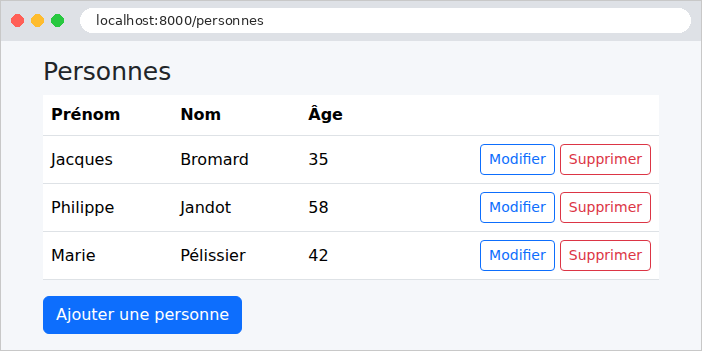
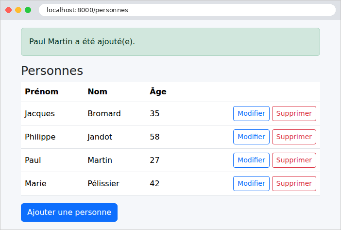
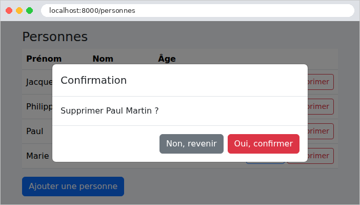

9. Architecture en couches et accès aux données
Les exemples précédents gardaient leurs données en mémoire, ou dans le cache. Une vraie application les garde dans une base de données, et s'organise en couches (cf. schéma de l'introduction) :
- la couche web (contrôleurs, vues) : lire la requête, appeler la couche métier, choisir la vue ;
- la couche métier : les règles de gestion ;
- la couche DAO (*Data Access Object*) : les requêtes à la base de données.
Chaque couche ne connaît que la couche du dessous, et le moins possible de ses détails : la couche web ignore le SQL, la couche métier ignore le HTML. Cette séparation rend chaque couche plus simple à comprendre, à tester et à faire évoluer. L'exemple 28 l'applique à la gestion d'une liste de personnes : c'est, en plus petit, la gestion des médecins et des clients de l'étude de cas.
En [PHP], l'accès à une base de données repose sur plusieurs étages :
- l'extension PDO (*PHP Data Objects*) de [PHP] définit une interface commune à tous les SGBD : ouvrir une connexion, exécuter un ordre SQL, lire les lignes. Chaque SGBD a son pilote : [pdo_mysql] pour [MySQL] (et [MariaDB]), livré avec [PHP] ;
- le constructeur de requêtes (*query builder*) de [Laravel] (façade [DB]) construit les ordres SQL à partir d'appels de méthodes ([where], [orderBy]...), quel que soit le SGBD, et gère les connexions et les transactions ;
- Eloquent, l'ORM (*Object-Relational Mapper*) de [Laravel], fait correspondre des classes (les modèles, au sens de [Eloquent]) aux tables de la base, et transforme les lignes lues en objets. Il suit le modèle dit *Active Record* : chaque objet sait se lire et s'enregistrer lui-même ([Personne::find(1)], [$personne->save()]).
C'est l'équivalent de [JDBC], [JPA] et [Hibernate] en [Java], d'[Entity Framework Core] en [C#], ou de [SQLAlchemy] en [Python]. Remarquons une conséquence du fonctionnement de [PHP] : puisque rien ne survit à la requête, chaque requête ouvre sa connexion à la base (à sa première requête SQL), et la ferme en se terminant. Il n'y a pas de pool de connexions comme en [Java] ou en [Python] ; ouvrir une connexion à [MySQL] sur la même machine ne prend d'ailleurs qu'une fraction de milliseconde.
L'exemple nécessite un serveur [MySQL] (ou [MariaDB]) en fonctionnement : l'annexe explique comment en installer un avec [Laragon].
9.1. Exemple 28 : une gestion de personnes en trois couches
| 28-couches/
├── app/
│ ├── Dao/
│ │ └── PersonnesDao.php
│ ├── Http/
│ │ ├── Controllers/
│ │ │ └── PersonnesController.php
│ │ └── Requests/
│ │ └── PersonneRequest.php
│ ├── Metier/
│ │ ├── DonneesPersonne.php
│ │ ├── MetierException.php
│ │ └── PersonnesMetier.php
│ └── Models/
│ └── Personne.php
├── bootstrap/
│ └── app.php
├── database/
│ └── dbpersonnes.sql
├── public/
│ ├── css/
│ │ └── styles.css
│ └── js/
│ └── app.js
├── resources/
│ └── views/
│ ├── components/
│ │ └── champ.blade.php
│ ├── fragments/
│ │ └── confirmation.blade.php
│ ├── layout.blade.php
│ └── personnes/
│ ├── formulaire.blade.php
│ └── liste.blade.php
├── routes/
│ └── web.php
└── ...
|
9.1.1. La base de données
La base [dbpersonnes] est créée par un script SQL. Avec [Laragon], on l'exécute par exemple dans l'outil [HeidiSQL] (menu Fichier / Exécuter un fichier SQL), ou en ligne de commande, depuis le dossier de l'exemple :
| mysql -u root < database/dbpersonnes.sql
|
Le fichier [database/dbpersonnes.sql] :
| -- base de l'exemple 28 : une seule table, [personnes]
-- le script est écrit en UTF-8
SET NAMES utf8mb4;
DROP DATABASE IF EXISTS dbpersonnes;
CREATE DATABASE dbpersonnes CHARACTER SET utf8mb4 COLLATE utf8mb4_unicode_ci;
USE dbpersonnes;
CREATE TABLE personnes (
id INT NOT NULL AUTO_INCREMENT,
-- la version de la ligne, augmentée à chaque modification (cf. couche DAO)
version INT NOT NULL DEFAULT 0,
prenom VARCHAR(30) NOT NULL,
nom VARCHAR(30) NOT NULL,
age INT NOT NULL,
PRIMARY KEY (id),
-- deux personnes ne peuvent pas avoir les mêmes prénom et nom
CONSTRAINT unq_personnes_prenom_nom UNIQUE (prenom, nom)
) ENGINE = InnoDB;
INSERT INTO personnes (prenom, nom, age) VALUES
('Marie', 'Pélissier', 42),
('Jacques', 'Bromard', 35),
('Philippe', 'Jandot', 58);
|
- ligne 3 : le script est écrit en [UTF-8] : on l'indique au serveur, pour que les accents des données ([Pélissier]) arrivent intacts ;
- ligne 5 : le jeu de caractères [utf8mb4] accepte tous les caractères (accents, emojis...). La collation [utf8mb4_unicode_ci] compare les chaînes sans tenir compte des majuscules ni des accents : pour [MySQL], [pelissier] et [Pélissier] sont égaux ;
- ligne 11 : un numéro de version, augmenté à chaque modification de la ligne (cf. verrou optimiste, plus bas) ;
- ligne 17 : une contrainte d'unicité nommée : la base refuse deux personnes de mêmes prénom et nom. Son nom servira à reconnaître l'erreur.
[Laravel] sait aussi créer les tables lui-même, par des migrations : des classes [PHP] qui décrivent, étape par étape, la création et les modifications de chaque table (commande [php artisan migrate]). Nous gardons un script SQL, commun à toutes les versions de l'étude de cas, et qui montre exactement ce que contient la base.
9.1.2. La configuration
La connexion à la base est décrite par le fichier [.env] :
| # la connexion à la base : le SGBD MySQL, sur cette machine (127.0.0.1), port 3306,
# la base dbpersonnes, l'utilisateur root sans mot de passe (les réglages de Laragon)
DB_CONNECTION=mysql
DB_HOST=127.0.0.1
DB_PORT=3306
DB_DATABASE=dbpersonnes
DB_USERNAME=root
DB_PASSWORD=
# true : les ordres SQL envoyés à la base sont affichés dans la console
DB_LOG=false
|
[DB_CONNECTION] désigne l'une des connexions décrites par la configuration de [Laravel] ([mysql], [mariadb], [pgsql], [sqlite], [sqlsrv]) ; les lignes suivantes la règlent. Si votre serveur a un mot de passe, indiquez-le dans [DB_PASSWORD]. La connexion [mysql] dialogue avec le serveur en [utf8mb4], le jeu de caractères de la base. [DB_LOG] est une variable à nous, lue par [bootstrap/app.php] :
| <?php
// bootstrap/app.php : l'application de l'exemple 28
use Illuminate\Database\Events\QueryExecuted;
use Illuminate\Database\Events\TransactionBeginning;
use Illuminate\Database\Events\TransactionCommitted;
use Illuminate\Database\Events\TransactionRolledBack;
use Illuminate\Foundation\Application;
use Illuminate\Support\Facades\DB;
use Illuminate\Support\Facades\Event;
(require __DIR__.'/../../vendor/autoload.php')->addPsr4('App\\', __DIR__.'/../app/');
return Application::configure(basePath: dirname(__DIR__))
->withRouting(
web: __DIR__.'/../routes/web.php',
// la route qui sert Bootstrap (cf. exemple 15)
then: fn () => require __DIR__.'/../../commun/bootstrap.php')
->withMiddleware()
->withExceptions()
->booted(function () {
// DB_LOG=true (fichier .env) : chaque ordre SQL, et chaque étape d'une
// transaction, est affiché dans la console du serveur
if (env('DB_LOG')) {
DB::listen(fn (QueryExecuted $q) =>
error_log($q->sql.' '.json_encode($q->bindings, JSON_UNESCAPED_UNICODE)));
Event::listen(TransactionBeginning::class, fn () => error_log('BEGIN'));
Event::listen(TransactionCommitted::class, fn () => error_log('COMMIT'));
Event::listen(TransactionRolledBack::class, fn () => error_log('ROLLBACK'));
}
})
->create();
|
- lignes 24-30 : si [DB_LOG] vaut [true], chaque ordre SQL est affiché dans la console. [DB::listen] enregistre une fonction appelée après chaque ordre SQL, avec un objet [QueryExecuted] (le texte de l'ordre, ses paramètres, sa durée). [Event::listen] enregistre une fonction appelée à chaque événement d'un type donné : [Laravel] signale ainsi, entre autres, le début, la validation et l'annulation des transactions. Les événements sont un autre moyen, avec les middlewares, d'intervenir dans le fonctionnement du framework. (Nous lisons [env] directement, pour faire court ; une application ordinaire passerait par un fichier de configuration, cf. exemple 25.)
Il n'y a rien d'autre à configurer : les classes des trois couches sont créées par le conteneur de [Laravel], qui injecte à chacune la couche du dessous (le contrôleur reçoit la couche métier, la couche métier reçoit la couche DAO).
9.1.3. Le modèle Personne
| <?php
// app/Models/Personne.php : une ligne de la table [personnes], un "modèle" Eloquent
namespace App\Models;
use Illuminate\Database\Eloquent\Model;
// Model : la classe mère des entités d'Eloquent, l'ORM de Laravel. Les colonnes
// de la table deviennent, sans rien déclarer, des propriétés de l'objet ($p->nom)
class Personne extends Model
{
// le nom de la table (Eloquent le déduirait du nom de la classe : personnes)
protected $table = 'personnes';
// la table n'a pas les colonnes created_at et updated_at qu'Eloquent tient à jour par défaut
public $timestamps = false;
// les colonnes que l'on peut remplir en bloc : new Personne([...]), update([...])
protected $fillable = ['prenom', 'nom', 'age'];
// les conversions de types, colonne par colonne
protected function casts(): array
{
return ['age' => 'integer', 'version' => 'integer'];
}
}
|
- ligne 10 : un modèle [Eloquent] hérite de la classe [Model]. Les colonnes de la table ne sont pas déclarées : [Eloquent] lit la ligne, et chaque colonne devient une propriété de l'objet ([$p->nom], [$p->version]). La clé primaire est, par défaut, la colonne [id], générée par la base ([AUTO_INCREMENT]) ;
- ligne 13 : la table associée à la classe. [Eloquent] la déduirait lui-même du nom de la classe, en le mettant au pluriel (à l'anglaise) ;
- ligne 16 : par défaut, [Eloquent] tient à jour deux colonnes, [created_at] et [updated_at], qu'il suppose présentes dans chaque table. La nôtre ne les a pas ;
- ligne 19 : les colonnes que l'on peut remplir « en bloc », à partir d'un tableau ([Personne::create([...])]). C'est une précaution : un tableau venu d'un formulaire pourrait contenir d'autres colonnes ([version], [id]...), que l'on ne veut pas laisser remplir ainsi ;
- lignes 22-25 : les conversions de type : le pilote rend certaines colonnes numériques sous forme de chaînes ; [casts] garantit des entiers. Il existe des conversions pour les booléens, les dates (des objets [Carbon]), les décimaux, les tableaux (une colonne JSON)...
9.1.4. La couche DAO
| <?php
// app/Dao/PersonnesDao.php : la couche DAO, des requêtes, aucune règle de gestion
namespace App\Dao;
use App\Metier\DonneesPersonne;
use App\Models\Personne;
use Illuminate\Database\Eloquent\Collection;
use Illuminate\Support\Facades\DB;
class PersonnesDao
{
// SELECT * FROM personnes ORDER BY nom, prenom
public function lister(): Collection
{
return Personne::orderBy('nom')->orderBy('prenom')->get();
}
// SELECT * FROM personnes WHERE id = ? LIMIT 1 ; null si la personne n'existe pas
public function lire(int $id): ?Personne
{
return Personne::find($id);
}
// une personne de mêmes prénom et nom, autre que [$saufId] :
// SELECT * FROM personnes WHERE prenom = ? AND nom = ? AND id <> ? LIMIT 1
public function homonyme(string $prenom, string $nom, int $saufId = 0): ?Personne
{
return Personne::where('prenom', $prenom)->where('nom', $nom)
->where('id', '<>', $saufId)->first();
}
// INSERT INTO personnes (prenom, nom, age) VALUES (?, ?, ?) ; la base génère
// l'id, qu'Eloquent range dans l'objet
public function ajouter(DonneesPersonne $donnees): Personne
{
return Personne::create(['prenom' => $donnees->prenom, 'nom' => $donnees->nom,
'age' => $donnees->age]);
}
// le VERROU OPTIMISTE : UPDATE ... SET ..., version = version + 1
// WHERE id = ? AND version = ? ; rend le nombre de lignes modifiées (0 : la
// ligne a été modifiée, ou supprimée, depuis sa lecture)
public function modifier(int $id, int $version, DonneesPersonne $donnees): int
{
return Personne::where('id', $id)->where('version', $version)->update([
'prenom' => $donnees->prenom, 'nom' => $donnees->nom, 'age' => $donnees->age,
// DB::raw : une expression SQL, écrite telle quelle dans l'ordre SQL
'version' => DB::raw('version + 1'),
]);
}
// DELETE FROM personnes WHERE id = ?
public function supprimer(int $id): void
{
Personne::whereKey($id)->delete();
}
}
|
La couche DAO ne contient que des requêtes, sans aucune règle de gestion. Chaque méthode utilise la connexion de la requête en cours, et participe à la transaction ouverte, s'il y en a une, par la couche métier.
- lignes 14-17 : [Personne::orderBy(...)] commence une requête sur la table des personnes ; les méthodes s'enchaînent ([orderBy] ajoute un tri), et [get()] exécute la requête. Le résultat est une collection [Eloquent] (exemple 03) d'objets [Personne] ;
- lignes 20-23 : [find] : la lecture par clé primaire, ou [null] ;
- lignes 27-31 : [where(colonne, valeur)] ajoute une condition d'égalité ; [where(colonne, opérateur, valeur)] une condition quelconque. Les valeurs sont transmises à la base comme paramètres de l'ordre SQL (les [?]), et jamais recopiées dans son texte, ce qui rend impossible l'injection SQL. [first()] rend la première ligne ([LIMIT 1]), ou [null] ;
- lignes 35-39 : [Personne::create] crée l'objet à partir d'un tableau (dans les limites de [$fillable]) et l'insère dans la base ; [Eloquent] range dans l'objet l'id généré par la base ;
- lignes 44-51 : la modification, avec un verrou optimiste. L'ordre [UPDATE] porte deux conditions : l'id de la personne, et la version lue au moment de l'affichage du formulaire. Il augmente la version de 1 : [DB::raw] insère une expression SQL telle quelle ([version + 1]), au lieu d'une valeur. Si une autre requête a modifié la ligne entre-temps, sa version a changé, et l'[UPDATE] ne modifie aucune ligne : [update] rend le nombre de lignes modifiées, 0 ici. C'est le principe du verrou optimiste : on ne bloque rien, mais on détecte les modifications concurrentes. ([Eloquent] ne gère pas lui-même de numéro de version, contrairement à [Hibernate] ou à [SQLAlchemy] : la condition est écrite à la main.) ;
- lignes 54-57 : un [DELETE], construit de la même façon ([whereKey] : une condition sur la clé primaire).
9.1.5. La couche métier
| <?php
// app/Metier/DonneesPersonne.php : les données d'une personne, telles que la couche web les transmet
namespace App\Metier;
readonly class DonneesPersonne
{
public function __construct(
public string $prenom,
public string $nom,
public int $age,
) {
}
}
|
Les données d'une personne, telles que la couche web les transmet à la couche métier : un objet simple, sans lien avec [Laravel].
| <?php
// app/Metier/MetierException.php : une règle de gestion refuse l'opération ; le
// message est destiné à l'utilisateur
namespace App\Metier;
use RuntimeException;
class MetierException extends RuntimeException
{
}
|
Une classe d'exception propre à la couche métier : une règle de gestion refuse l'opération, et le message de l'exception est destiné à l'utilisateur. Elle hérite de [RuntimeException], sans rien y ajouter : seul son nom compte.
| <?php
// app/Metier/PersonnesMetier.php : la couche MÉTIER, les règles de gestion, et elles
// seules. Chaque opération qui écrit est une TRANSACTION : validée (COMMIT) si la
// fonction se termine normalement, annulée (ROLLBACK) si une exception en sort
namespace App\Metier;
use App\Dao\PersonnesDao;
use App\Models\Personne;
use Exception;
use Illuminate\Database\Eloquent\Collection;
use Illuminate\Database\QueryException;
use Illuminate\Support\Facades\DB;
class PersonnesMetier
{
private const HOMONYME = 'Une personne porte déjà ces prénom et nom.';
private const MODIFIEE = 'Cette fiche a été modifiée entre-temps : rechargez-la.';
private const INCONNUE = "Cette personne n'existe pas (ou plus).";
public function __construct(private PersonnesDao $dao)
{
}
public function lister(): Collection
{
return $this->dao->lister();
}
public function lire(int $id): Personne
{
return $this->dao->lire($id) ?? throw new MetierException(self::INCONNUE);
}
public function ajouter(DonneesPersonne $donnees): Personne
{
try {
// DB::transaction : la fonction est exécutée dans une transaction
return DB::transaction(function () use ($donnees) {
// règle 1 : pas deux personnes de mêmes prénom et nom
if ($this->dao->homonyme($donnees->prenom, $donnees->nom)) {
throw new MetierException(self::HOMONYME);
}
return $this->dao->ajouter($donnees);
});
} catch (QueryException $e) {
throw self::traduire($e);
}
}
public function modifier(int $id, int $version, DonneesPersonne $donnees): Personne
{
try {
return DB::transaction(function () use ($id, $version, $donnees) {
$personne = $this->lire($id);
// règle 2 : on ne modifie pas une fiche modifiée entre-temps par un autre
if ($personne->version !== $version) {
throw new MetierException(self::MODIFIEE);
}
if ($this->dao->homonyme($donnees->prenom, $donnees->nom, $id)) {
throw new MetierException(self::HOMONYME);
}
// l'UPDATE "WHERE id = ... AND version = ..." n'a modifié aucune ligne :
// une autre requête a modifié la fiche depuis sa lecture
if ($this->dao->modifier($id, $version, $donnees) === 0) {
throw new MetierException(self::MODIFIEE);
}
// la fiche, relue : ses nouvelles valeurs et sa nouvelle version
return $this->lire($id);
});
} catch (QueryException $e) {
throw self::traduire($e);
}
}
public function supprimer(int $id): Personne
{
return DB::transaction(function () use ($id) {
$personne = $this->lire($id);
$this->dao->supprimer($id);
return $personne;
});
}
// deux ajouts simultanés : la contrainte d'unicité de la base a refusé le
// second ; getMessage() contient le message de MySQL, avec le nom de la contrainte
private static function traduire(QueryException $e): Exception
{
if (str_contains($e->getMessage(), 'unq_personnes_prenom_nom')) {
return new MetierException(self::HOMONYME, previous: $e);
}
return $e;
}
}
|
- lignes 17-21 : les messages des règles de gestion ;
- lignes 32-35 : une personne inexistante est une erreur métier. L'opérateur [??] accepte à droite une expression [throw] : si la personne est [null], l'exception est levée ;
- lignes 37-51 : la règle n° 1 : pas deux personnes de mêmes prénom et nom. [DB::transaction] exécute la fonction dans une transaction : si la fonction se termine normalement, la transaction est validée ([COMMIT]), et [DB::transaction] rend la valeur de la fonction ; si une exception en sort, elle est annulée ([ROLLBACK]) : aucune des modifications faites dans la fonction n'est conservée, et l'exception poursuit son chemin. La couche métier décide ainsi de l'étendue des transactions : une opération métier, une transaction. La règle est vérifiée avant d'écrire, et une [MetierException] est levée si elle n'est pas respectée. Mais cette vérification ne suffit pas : deux requêtes simultanées pourraient vérifier toutes les deux qu'il n'y a pas d'homonyme, puis insérer toutes les deux. La contrainte d'unicité de la base refuse alors le second [INSERT], et [Laravel] lève une [QueryException], que la méthode [traduire] transforme en la même [MetierException]. La base est le dernier rempart ;
- lignes 53-76 : la règle n° 2 : on ne modifie pas une fiche qui a été modifiée entre-temps par quelqu'un d'autre. Le formulaire de modification transporte la version de la fiche lue (dans un champ caché) ; si elle diffère de la version actuelle, la fiche a changé depuis son affichage. Là encore, la base (par le verrou optimiste de la couche DAO) détecte le cas où la modification concurrente a lieu entre la lecture et l'[UPDATE] : l'[UPDATE] ne modifie alors aucune ligne. La fiche est ensuite relue, avec ses nouvelles valeurs ;
- lignes 78-85 : la suppression rend la personne supprimée, pour le message de confirmation ;
- lignes 89-95 : [getMessage()] contient le message de [MySQL], dont le nom de la contrainte violée. Une autre erreur est rendue telle quelle : ce n'est pas une erreur métier, mais une erreur de programmation. Le paramètre nommé [previous] attache l'exception d'origine à la nouvelle, pour le journal.
9.1.6. La couche web
| <?php
// app/Http/Requests/PersonneRequest.php : les champs du formulaire et leurs contraintes (cf. exemple 19)
namespace App\Http\Requests;
use App\Metier\DonneesPersonne;
use Illuminate\Foundation\Http\FormRequest;
class PersonneRequest extends FormRequest
{
public function rules(): array
{
return [
'prenom' => 'required|max:30',
'nom' => 'required|max:30',
'age' => 'required|integer|between:0,150',
// la version de la fiche, transportée par un champ caché (modification seulement)
'version' => 'nullable|integer',
];
}
public function messages(): array
{
return [
'prenom.required' => 'Le prénom est obligatoire.',
'prenom.max' => '30 caractères au plus.',
'nom.required' => 'Le nom est obligatoire.',
'nom.max' => '30 caractères au plus.',
'age.required' => "L'âge est obligatoire.",
'age.integer' => "L'âge doit être un nombre entier.",
'age.between' => "L'âge doit être compris entre 0 et 150.",
];
}
// les données validées, pour la couche métier
public function donnees(): DonneesPersonne
{
return new DonneesPersonne($this->validated('prenom'), $this->validated('nom'),
(int) $this->validated('age'));
}
}
|
La requête de formulaire (exemple 19). Le champ caché [version] est facultatif (formulaire d'ajout). La méthode [donnees] rend les données validées sous la forme attendue par la couche métier.
| <?php
// app/Http/Controllers/PersonnesController.php : la couche WEB ; elle ne connaît que la couche métier
namespace App\Http\Controllers;
use App\Http\Requests\PersonneRequest;
use App\Metier\MetierException;
use App\Metier\PersonnesMetier;
use Illuminate\Http\RedirectResponse;
use Illuminate\View\View;
class PersonnesController
{
public function __construct(private PersonnesMetier $metier)
{
}
public function accueil(): RedirectResponse
{
return redirect()->route('personnes.liste');
}
public function liste(): View
{
return view('personnes.liste', ['personnes' => $this->metier->lister()]);
}
public function ajout(): View
{
return view('personnes.formulaire', ['titre' => 'Ajouter une personne',
'action' => route('personnes.ajouter'), 'personne' => null]);
}
// PersonneRequest : un formulaire invalide ne parvient pas jusqu'ici (cf. exemple 19)
public function ajouter(PersonneRequest $request): RedirectResponse
{
try {
$p = $this->metier->ajouter($request->donnees());
} catch (MetierException $e) {
// une règle métier refuse : retour au formulaire, avec la saisie, et le
// message, en bas de page
return back()->withInput()->with('erreur', $e->getMessage());
}
return redirect()->route('personnes.liste')->with('succes', "$p->prenom $p->nom a été ajouté(e).");
}
public function modification(int $id): View|RedirectResponse
{
try {
$p = $this->metier->lire($id);
} catch (MetierException $e) {
return redirect()->route('personnes.liste')->with('erreur', $e->getMessage());
}
return view('personnes.formulaire', ['titre' => 'Modifier une personne',
'action' => route('personnes.modifier', $id), 'personne' => $p]);
}
public function modifier(PersonneRequest $request, int $id): RedirectResponse
{
try {
$p = $this->metier->modifier($id, (int) $request->validated('version'), $request->donnees());
} catch (MetierException $e) {
return back()->withInput()->with('erreur', $e->getMessage());
}
return redirect()->route('personnes.liste')->with('succes', "$p->prenom $p->nom a été modifié(e).");
}
public function supprimer(int $id): RedirectResponse
{
try {
$p = $this->metier->supprimer($id);
} catch (MetierException $e) {
// pas de formulaire à réafficher : l'erreur voyage elle aussi en message flash
return redirect()->route('personnes.liste')->with('erreur', $e->getMessage());
}
return redirect()->route('personnes.liste')->with('succes', "$p->prenom $p->nom a été supprimé(e).");
}
}
|
- ligne 14 : la couche métier, seule couche connue du contrôleur ;
- lignes 35-45 : l'ajout, en trois temps : la validation du formulaire (les erreurs de saisie), faite avant l'appel de l'action par la requête de formulaire ; l'appel de la couche métier (les règles de gestion) ; puis le schéma PRG, avec un message flash de succès. Une [MetierException] renvoie au formulaire : [back()] redirige vers la page précédente (celle du formulaire), [withInput()] conserve la saisie pour [old] (exemple 19), et [with('erreur', ...)] dépose le message d'erreur, que le gabarit affichera en bas de page. C'est exactement ce que fait [Laravel] pour un formulaire invalide : les erreurs de saisie et les erreurs métier sont traitées de la même façon ;
- lignes 47-56 : le formulaire de modification, pré-rempli avec la personne lue. Une personne inexistante renvoie à la liste, avec un message d'erreur flash ;
- lignes 58-66 : la modification, sur le même modèle que l'ajout ;
- lignes 68-77 : la suppression. Il n'y a pas de formulaire à réafficher : l'erreur éventuelle voyage elle aussi dans un message flash, [erreur].
La couche web ne contient ni SQL ni règle de gestion : elle traduit la requête en appel de la couche métier, et le résultat en page. La table de routage :
| <?php
// routes/web.php : les routes de l'exemple 28
use App\Http\Controllers\PersonnesController;
use Illuminate\Support\Facades\Route;
Route::controller(PersonnesController::class)->name('personnes.')->group(function () {
Route::get('/', 'accueil');
Route::get('personnes', 'liste')->name('liste');
Route::get('personnes/ajout', 'ajout')->name('ajout');
Route::post('personnes/ajout', 'ajouter')->name('ajouter');
Route::get('personnes/{id}/modification', 'modification')->whereNumber('id')->name('modification');
Route::put('personnes/{id}', 'modifier')->whereNumber('id')->name('modifier');
Route::delete('personnes/{id}', 'supprimer')->whereNumber('id')->name('supprimer');
});
|
- ligne 7 : dans un groupe, [name] donne un préfixe aux noms des routes : la route nommée [liste] s'appelle en fait [personnes.liste] ;
- lignes 13-14 : la modification est une requête PUT, et la suppression une requête DELETE, simulées par des formulaires POST (exemple 21).
Les vues :
| <!doctype html>
<html lang="fr">
<head>
<meta charset="utf-8">
<title>Personnes</title>
<link rel="stylesheet" href="{{ route('bootstrap', 'css/bootstrap.min.css') }}">
<link rel="stylesheet" href="{{ asset('css/styles.css') }}">
</head>
<body>
<div class="container py-3" style="max-width: 40rem">
{{-- le message de succès (message flash [succes]) : en haut --}}
@session('succes')
<div class="alert alert-success" role="status">{{ $value }}</div>
@endsession
<main>
@yield('contenu')
</main>
{{-- l'erreur (message flash [erreur]) : en bas --}}
@session('erreur')
<div class="zone-erreur" role="alert">{{ $value }}</div>
@endsession
</div>
@include('fragments.confirmation')
<script src="{{ asset('js/app.js') }}"></script>
</body>
</html>
|
- lignes 12-14 : le message de succès, en haut de page (exemple 20) ;
- lignes 19-21 : le message d'erreur, en bas de page.
| @extends('layout')
@section('contenu')
<h1 class="h3">Personnes</h1>
<table class="table align-middle">
<thead><tr><th>Prénom</th><th>Nom</th><th>Âge</th><th></th></tr></thead>
<tbody>
@foreach ($personnes as $p)
<tr>
<td>{{ $p->prenom }}</td>
<td>{{ $p->nom }}</td>
<td>{{ $p->age }}</td>
<td class="text-end">
<a class="btn btn-sm btn-outline-primary" href="{{ route('personnes.modification', $p->id) }}">Modifier</a>
<form method="post" class="d-inline" action="{{ route('personnes.supprimer', $p->id) }}"
data-confirmation="Supprimer {{ $p->prenom }} {{ $p->nom }} ?">
@csrf
@method('DELETE')
<button class="btn btn-sm btn-outline-danger" type="submit">Supprimer</button>
</form>
</td>
</tr>
@endforeach
</tbody>
</table>
<a class="btn btn-primary" href="{{ route('personnes.ajout') }}">Ajouter une personne</a>
@endsection
|
La liste reprend les liens et les boutons de l'exemple 21, avec sa fenêtre de confirmation (les fichiers [fragments/confirmation.blade.php] et [public/js/app.js] sont ceux de l'exemple 21).
| @extends('layout')
@section('contenu')
<h1 class="h3">{{ $titre }}</h1>
<form method="post" action="{{ $action }}" novalidate>
@csrf
{{-- une modification : la méthode PUT, et la version de la fiche lue --}}
@if ($personne)
@method('PUT')
<input type="hidden" name="version" value="{{ old('version', $personne->version) }}">
@endif
<x-champ nom="prenom" libelle="Prénom" :valeur="$personne?->prenom" required maxlength="30" />
<x-champ nom="nom" libelle="Nom" :valeur="$personne?->nom" required maxlength="30" />
<x-champ nom="age" libelle="Âge" type="number" :valeur="$personne?->age" required min="0" max="150" />
<button class="btn btn-primary" type="submit">Enregistrer</button>
<a class="btn btn-link" href="{{ route('personnes.liste') }}">Annuler</a>
</form>
@endsection
|
- lignes 8-11 : une vue commune à l'ajout et à la modification : pour une modification ([$personne] n'est pas [null]), la méthode PUT, et le champ caché qui transporte la version de la fiche lue. [old('version', $personne->version)] : la version saisie précédemment (après un retour au formulaire), ou celle de la fiche ;
- lignes 12-14 : le composant de l'exemple 19, qui reçoit en plus la valeur initiale du champ ([$personne?->prenom] : [null] pour un ajout).
| {{-- un champ de saisie, avec son libellé et son PREMIER message d'erreur (cf.
exemple 19) ; [valeur] : la valeur initiale du champ, affichée si le formulaire
n'a pas encore été envoyé --}}
@props(['nom', 'libelle', 'type' => 'text', 'valeur' => null])
<div class="mb-2">
<label class="form-label" for="{{ $nom }}">{{ $libelle }}</label>
<input {{ $attributes->class(['form-control', 'is-invalid' => $errors->has($nom)]) }}
type="{{ $type }}" id="{{ $nom }}" name="{{ $nom }}"
@if ($type !== 'password') value="{{ old($nom, $valeur) }}" @endif>
{{-- @error : le bloc n'est affiché que si le champ a une erreur, dont le
premier message est dans la variable $message --}}
@error($nom)
<div class="invalid-feedback">{{ $message }}</div>
@enderror
</div>
|
- ligne 4 : le composant a un paramètre de plus, [valeur] ;
- ligne 9 : [old] accepte une valeur par défaut, utilisée si le formulaire n'a pas encore été envoyé : la valeur initiale du champ.
9.1.7. Exécution
La liste des personnes :

Un formulaire d'ajout mal rempli : les erreurs de saisie sont détectées par la couche web.

Un homonyme : la saisie est correcte, mais la couche métier refuse l'ajout. La comparaison étant faite par la base, elle ne tient compte ni des majuscules ni des accents : [marie pelissier] est un homonyme de [Marie Pélissier].

Un ajout réussi :

Pour observer la règle n° 2, ouvrons la même fiche dans deux onglets. Dans le premier, modifions l'âge et enregistrons. Dans le second, qui affiche encore l'ancienne version, modifions aussi la fiche :

La suppression, avec sa confirmation :


9.1.8. Les ordres SQL
Relançons l'application avec la variable d'environnement [DB_LOG=true] (sous [Linux] et [macOS] : [DB_LOG=true php artisan serve] ; sous [Windows] : [$env:DB_LOG="true"] avant [php artisan serve] ; ou en modifiant le fichier [.env]), et suivons dans la console les ordres SQL d'une modification. L'affichage du formulaire de modification de la personne n° 1 :
| select * from `personnes` where `personnes`.`id` = ? limit 1 [1]
|
Une lecture par clé primaire, dont la valeur est passée en paramètre (le [?]), sans transaction : une lecture isolée n'en a pas besoin. L'enregistrement de la fiche, avec un nouvel âge :
| BEGIN
select * from `personnes` where `personnes`.`id` = ? limit 1 [1]
select * from `personnes` where `prenom` = ? and `nom` = ? and `id` <> ? limit 1 ["Marie","Pélissier",1]
update `personnes` set `prenom` = ?, `nom` = ?, `age` = ?, `version` = version + 1 where `id` = ? and `version` = ? ["Marie","Pélissier",44,1,1]
select * from `personnes` where `personnes`.`id` = ? limit 1 [1]
COMMIT
|
On y reconnaît, dans une seule transaction : la lecture de la fiche, la recherche d'un homonyme, l'[UPDATE], et la relecture. L'[UPDATE] augmente la version ([version + 1], écrit tel quel grâce à [DB::raw]), et porte la condition du verrou optimiste ([and version = ?], avec la version lue, ici 1). [Laravel] entoure les noms de tables et de colonnes d'accents graves ([personnes]), la façon d'écrire ces noms en [MySQL]. Envoyons maintenant le même formulaire une seconde fois, toujours avec la version 1 :
| BEGIN
select * from `personnes` where `personnes`.`id` = ? limit 1 [1]
ROLLBACK
|
La version lue (2) n'est pas celle du formulaire (1) : la couche métier a levé une [MetierException], qui a annulé la transaction ([ROLLBACK]), et la page affiche « Cette fiche a été modifiée entre-temps : rechargez-la. ». De même, l'ajout d'un homonyme s'arrête après la recherche de l'homonyme, sans [INSERT].